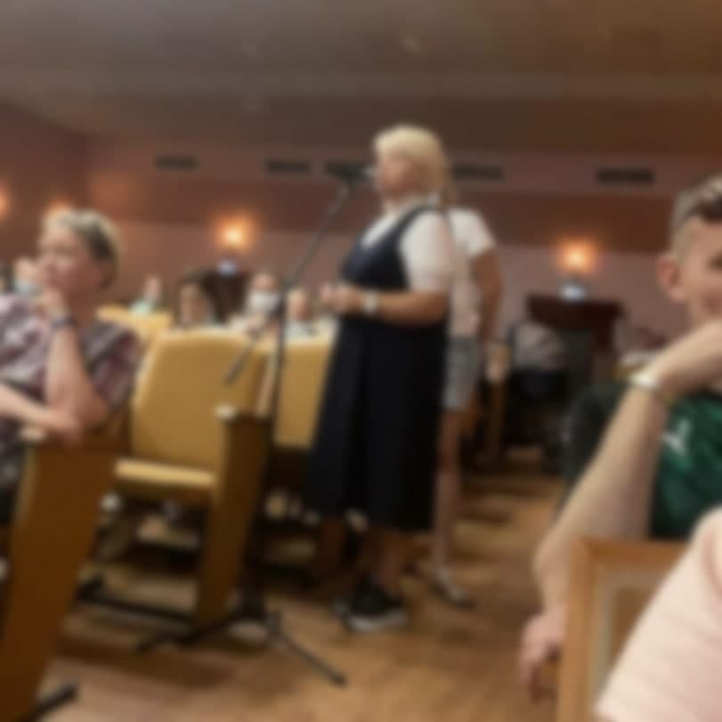

Проведена очная часть Общего собрания собственников.

Очная часть Общего собрания собственников проведена. Выражаем благодарность всем собственникам, принявшим участие в очной части. Отдельная благодарность приглашенным на Общее собрание собственников представителям ООО «УК«Гестор» и ООО «Информационные и коммуникационные технологии», а также Муниципальному бюджетному учреждению культуры «Дом культуры Саввино» - за предоставленную площадку и техническую организацию собрания. Елена, с вашей стороны было озвучено много конструктивных замечаний и отзывов, будем рады вашему содействию и помощи общему делу, обратитесь к нам на e-mail: all@bezymiannaia2.ru
По состоянию на 2 августа до - «Общее собрание собственников состоялось, и считается состоявшимся и правомочным (ч. 3 ст. 45 ЖК РФ)», принято участие: ~1700 из необходимых 15251 голосов. В случае не достижения необходимого количества голосов (15251) до 5 сентября 23:55 - Общее собрание собственников будет признано не состоявшимся. Следите за новостями на сайте дома в канале telegram.
Контакты Инициативной группы находятся на сайте дома: https://безымянная2.рф/#contact
Аудиотрансляция с Общего собрания собственников от 31.07.2021 будет опубликована в ближайшее время на сайте дома: https://безымянная2.рф
С информацией/материалами по Общему собранию собственников можно ознакомиться в кабинете №3 офиса УК «Гестор», Московская область, г. Балашиха, мкр. Саввино, ул. Калинина, д. 14 c 9:00 до 18:00 с понедельника по пятницу
Состав Счетной комиссии начнет обход жильцов со 2 августа 20:00: Ознакомим с "СООБЩЕНИЕ о проведении внеочередного общего собрания собственников помещений в МКД"; Передадим под роспись лично в руки "РЕШЕНИЕ собственника по вопросам повестки дня, поставленным на голосование" (бюллетень).
Согласовать встречу в индивидуальном порядке с 2 августа по 5 сентября можно c Секретарем Счетной комиссии: Хомяк Анастасия Васильевна anastasiia.kv@bezymiannaia2.ru +7(985)2970712 (10:00 - 17:00)
Получить консультацию по Общему собранию у Председателя Счетной комиссии: Каф-Шнайдер Николай Владиславович nikolai.kv@bezymiannaia2.ru +7(909)9711133 (11:00 - 18:30)
Напоминаем, Инициативная группа - такие же равноправные собственники, как и все собственники в нашем доме, без особых прав и привилегий. Задача Инициативной группы, построить конструктивный диалог между Собственниками нашего дома и действующей Управляющей организацией, форсируя проблематику с грамотно и рационально распределенными приоритетами. Проявляйте уважение к представителям Инициативной группы, и цените затраченное ими время, как своё личное 🤝